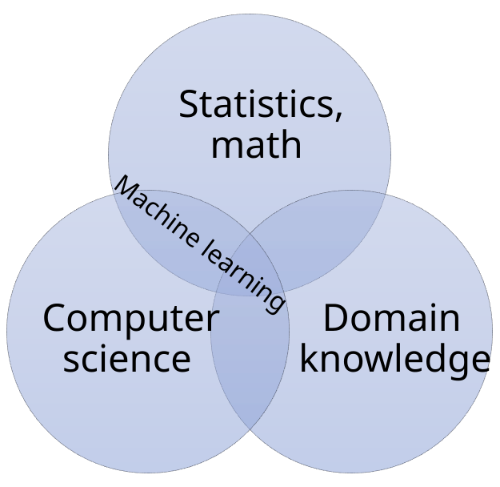
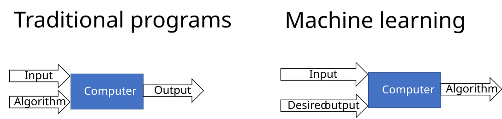
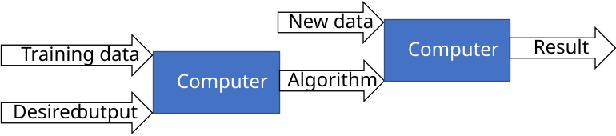

Machine Learning
Contents
Machine Learning#
Humans can learn from experience. In machine learning, the machine or program learns from data (or attempts to). The ever-increasing amount of available data has led to greatly increasing interest in machine learning. Machine learning is a collection of statistical methods that can be used to extract information from data.
Machine learning uses methods from computer science and statistics, preferably in combination with domain knowledge. The domain knowledge in our case is knowledge of law. Fig. 1 shows this view of machine learning in the intersection of computer science and statistics. One definition of data science is as a triangle at the intersection of computer science, statistics, and domain knowledge.
{kind=link}

Fig. 1 Machine learning lies in the intersection of statistics and computer science.#
Machine learning can be divided into three major categories:
Supervised learning where we provide human guidance to the learning process. The supervision is usually in the form of labels for the data.
Unsupervised learning where there is no human supervision.
Reinforcement learning is learning by trial and error, for example in robotics. Game playing programs, such as AlphaZero, are often based on reinforcement learning.
Machine learning differs from traditional programming in how we solve problems. A traditional program uses an algorithm on some input data to produce a result. With machine learning, the algorithm is unknown and is what we want to learn. In supervised learning, we have a set of input data and the corresponding desired output data. From this, we want to learn an algorithm or function that can produce the desired output from the given input. Fig. 2 illustrates this difference.

Fig. 2 Traditional programming versus supervised machine learning#
Once we have learned a function that (approximately) yields the desired output, we can use this function to predict labels for new, unlabeled data. This is illustrated in Fig. 3. The goal is for the learned function to generalize well to new data.

Fig. 3 Complete machine learning process, where we use our learned algorithm on new data.#
For many problems, there exists well-known traditional algorithms that solve the problem. For these problems, there is usually no reason to use machine learning. For example, there are many efficient algorithms for sorting data, so there is probably no need to use machine learning for this. We use machine learning when we have data to learn from, but there is no known function to produce the output we want.
Extracting Features#
Machine learning can work with many different types of data, both numbers, images, and text. However, computers process numbers, and so do machine learning algorithms. Therefore, the items we want to process with machine learning algorithms must be represented by numeric features. The input in machine learning is often a feature vector, which is a list of numbers. While some data is inherently numeric, in this course we will mostly work with text. Before we can use text in machine learning it must be converted to feature vectors, which we call vectorizing the data.
Text can be vectorized in different ways. One simple way is to register which words occur in the text. We can make a table of the word counts. Table 4 shows an example of word counts for two documents with different topics.
Word |
Document 1 |
Document 2 |
|---|---|---|
Oil |
54 |
0 |
Gas |
26 |
1 |
Drilling |
56 |
0 |
Marriage |
0 |
54 |
Parent |
4 |
30 |
Child |
0 |
20 |
This is known as a Bag of Words (BoW), because we ignore the order of the words and just lump them together in a “bag”. We certainly lose much of the meaning of the text by ignoring the order of the words. But the amount of information that is left is enough for some tasks. For example, we can use BoW representations to classify documents into topics.
Table 4 shows that document 1 has many mentions of the words “oil”, “gas”, and “drilling”. From this, we can guess that this document probably discusses petroleum law. Document 2, on the other hand, has many occurrences of the words “marriage”, “parent”, and “child”. This document probably discusses family law.